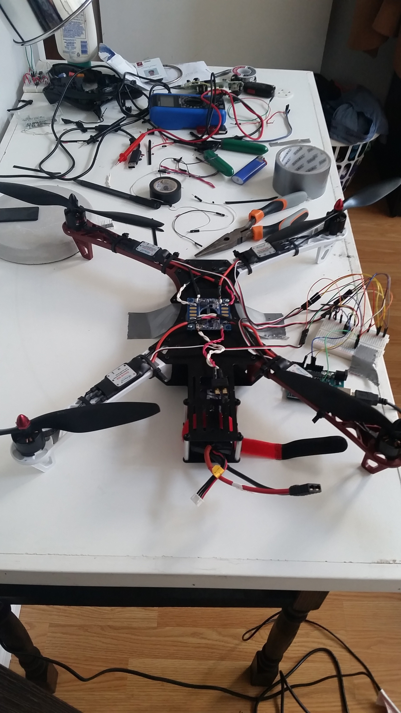
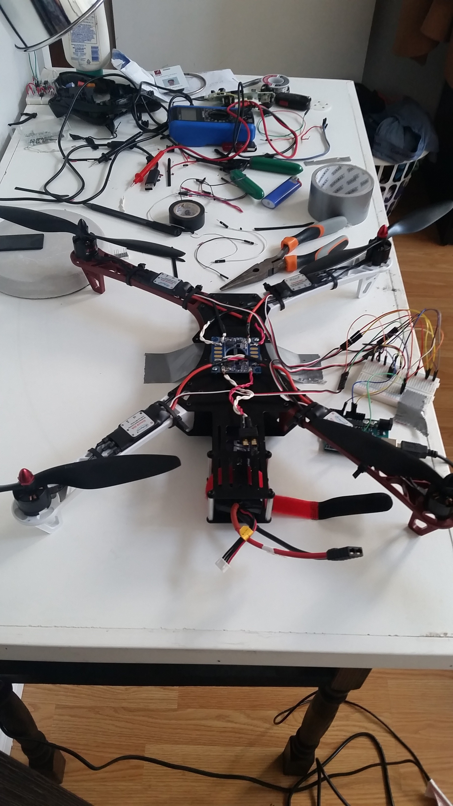

Object Tracking Drone


Goal
Create an autonomous drone from scratch that can detect and follow coloured objects.
Timeline
June 2017 - Present
The Journey This Far:
Overview
Code for this project is here.
After I decided to build a drone from scratch using an Arduino UNO as the flight controller, I decided to take on a bit more of a challenge. I used a Raspberry Pi with OpenCV for the computer vision component of the project. I used serial communication to interface the Raspberry Pi and a BetaFlight flight controller, which is much more stable than the Arduino was. The Raspberry Pi detects and objects and sends the position to the flight controller via the Multiwii Serial Protocol. Based on the position of object in the frame, PID controllers move the drone so as to place the object in the middle of the image frame, at a certain distance away.
First Test
This is the first test of the drone. Only the yaw PID controller is active. I'm going to build a test rig to tune the parameters, and then do a flight test.
Technologies Used
3D Printed Camera Case

More Pics
 
